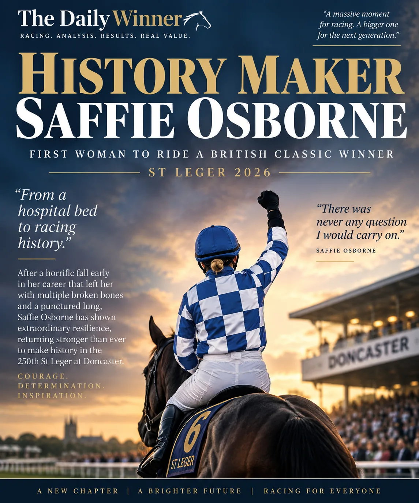

Main Edition · Sunday 13 September 2026
SUNDAY MAIN EDITION · BATH · CURRAGH · DONCASTER · 24 RACES
HISTORY MAKER 🏆
SAFFIE BREAKS THE CLASSIC BARRIER
250 years of the St Leger — and Saffie Osborne writes a completely new chapter.

🏆 A DAY RACING WILL NEVER FORGET
Saffie Osborne arrived at Doncaster with a late call-up and left having made British racing history. Riding Highwayman for Joseph O’Brien, she won the 250th St Leger at 11/1 and became the first woman to ride the winner of a British Classic.
The achievement carries even more weight when set against the road that brought her here. Early in her career a horrific fall left Osborne with serious injuries including broken bones and a punctured lung. There was never any suggestion that she would walk away. Other setbacks followed, but so did winners, big-race success and an increasingly prominent place among Britain’s leading riders.
At the start of St Leger week she did not even have a ride in the race. By Saturday afternoon she was partnering Highwayman on her first ride for Joseph O’Brien. Two and a half lengths later, racing had its defining image of the weekend.
Forty years after Gay Kelleway became the first woman to ride in a British Classic, Saffie Osborne became the first to win one. A landmark for her, a landmark for the sport — and a victory that deserves the whole front page.
NAP
Forty Years On
3.05 Doncaster · 9/4 evening
We promise we didn't pick her for the name! Forty years after Gay Kelleway became the first woman to ride in a British Classic, Saffie Osborne became the first to win one — aboard Joseph O'Brien's Highwayman. Twenty-four hours later, we're back with O'Brien for our Sunday NAP: Forty Years On. You really couldn't script it. 🏆
Coincidence aside, she arrives in excellent form and has already shown the level required for this company. There is plenty to like about the overall profile and she looks to have a cracking chance of getting her head in front.
NB
Recon Mission
5.00 Bath · 5/2 evening
A strong recent profile gives him a major chance in an open sprint. He brings the right sort of evidence into the race and makes plenty of appeal at the evening price.
Editor's Pick
Valedictory
3.40 Doncaster · 10/3 evening
One of the most persuasive profiles on Sunday's card. Recent form puts him firmly in the picture and the 10/3 evening price leaves enough room to make him an attractive third headline selection.
JM JUNGLE · 3.25 Curragh · around 25/1 evening
He's a big price, but some of his recent form makes him considerably more interesting than those odds suggest. This is a fiercely competitive sprint and no place for heroics, but he is one we are very keen to keep onside.
Sunday's final going and non-runners will be checked in the morning. The rankings below are tonight's card and will not be shuffled simply because prices move. Any material change in conditions will be flagged before publication.
⭐⭐⭐ Strong confidence · ⭐⭐ Good confidence · ⭐ Caution / competitive. Stars measure confidence in the ranking, not betting value. Bold = our No.1.
Bath
2.05
Galactic Glow · Rogers Dream · Pepper Fizz
⭐⭐
2.40
Q T Boy · Magical Life · Secret Flite
⭐⭐⭐
3.15
Two Plus Two · Curran · Basilette
⭐⭐
3.50
Big Time Rascal · Dark Sun · Geemann
⭐
4.25
Big Hitter · Romidijo · On The Queue Tee
⭐
5.00
Recon Mission · Symbol Of Hope · Ken Brulee
⭐⭐⭐
5.30
Blue Hero · Decalogue · Oviedo
⭐⭐
6.00
Danehill Star · Albus Anne · Flag Carrier
⭐⭐
Curragh
1.45
Bear On The Run · Genesis · Sondad
⭐⭐
2.15
Star Of State · Lord Ragnar · Atlantic Bridge
⭐⭐⭐
2.50
Sun Goddess · Ibelieveicanfly · Green Empress
⭐⭐⭐
3.25
JM Jungle · Argentine Tango · Rumstar
⭐⭐
4.00
Dr Rascal · Haffner · Trean
⭐⭐
4.35
Scandinavia · Queenstown · Jan Brueghel
⭐⭐⭐
5.10
Snapretend · Thundering On · Wemightakedlongway
⭐
5.45
Orandi · Pierre Royal · High Degree
⭐
Doncaster
1.25
Ancient State · Hypnotised · Equity Law
⭐
1.55
Asuka · Oliver Show · Blue Brother
⭐⭐
2.30
Ironwill · Flight Control · Military Code
⭐
3.05
Forty Years On · Silenciosa · Wannabe Royal
⭐⭐⭐
3.40
Valedictory · Say What You See · Arqoob
⭐⭐⭐
4.15
Fantasy Master · Tiva · Tiriac
⭐⭐
4.50
Rock Of England · Mighty Magnus · U S S Charleston
⭐⭐⭐
5.20
Archduke Ferdinand · Dandy Magic · Sixtygeesbaby
⭐
🩺 Saturday Autopsy
NO.1 WINNERS7/4714.9%
WINNER IN TOP 318/4738.3%
HEADLINE PICKS2/3NAP + EDITOR'S PICK WON
Saturday was below the standard set earlier in the week and there is no point pretending otherwise. The bright spots, though, were worth having: Royal County Glory landed the NAP, More Thunder won as Editor's Pick, and Arabian Crown was our No.1 at 11/1 in the 3.15 Leopardstown.
Better still, our No.2 Sons And Lovers chased Arabian Crown home at 14/1. The pair finished in exactly our order and returned a whopping 92.40 Exacta. Elsewhere Pole Star won at 11/1, Ernie McCrew at 7/1, Macarone at 6/1 and King Sharja at 9/2 from our three.
As for the St Leger? Our three missed the target completely. Highwayman stole Christmas, the presents and the bloody tree. 😂 Fortunately, what followed was a piece of racing history far more important than our prediction.